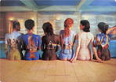

Kursblogg
På denna sida kommer jag att skriva lite om de laborationer jag gör i kursen och även presentera material jag gjort
Första inlägget
Har nu klarat av de första laborationen. Stötte på lite patrull vid konstruktionen av listorna, dvs med nästlingen, ända till jag kom på att jag lagt sluttaggen på li-elementen på fel plats. Kändes bra att jag kom på det själv.
Skrivet av Charlotta 2013-11-14
Andra inlägget
Kodandet är jättekul men det tar en fruktansvärd tid. Har hållit på i stort sett hela eftermiddagen och kvällen, trodde jag skulle kommit lite längre men har en bit kvar på uppgift 2. Men jag har iallafall validerat sidorna och en var helt utan fel, de andra tre hade ett fel var, det var ju ingenting!
Hittade ett så underbart vykort på väggen i Jons rum, kvinnor på vars rygg man målat omslagen från fler av Pink Floyds album. Tyvärr fanns det inte att köpa längre så jag fotograferade det. Skulle vara kul att ha som en affisch!
Lyssnade på Dark side of the moon och Wish you were here när jag satt och kodade. Vilken bra musik! Och suverän att ha i bakgrunden när jag jobbar.
Skrivet av Charlotta 2013-11-29